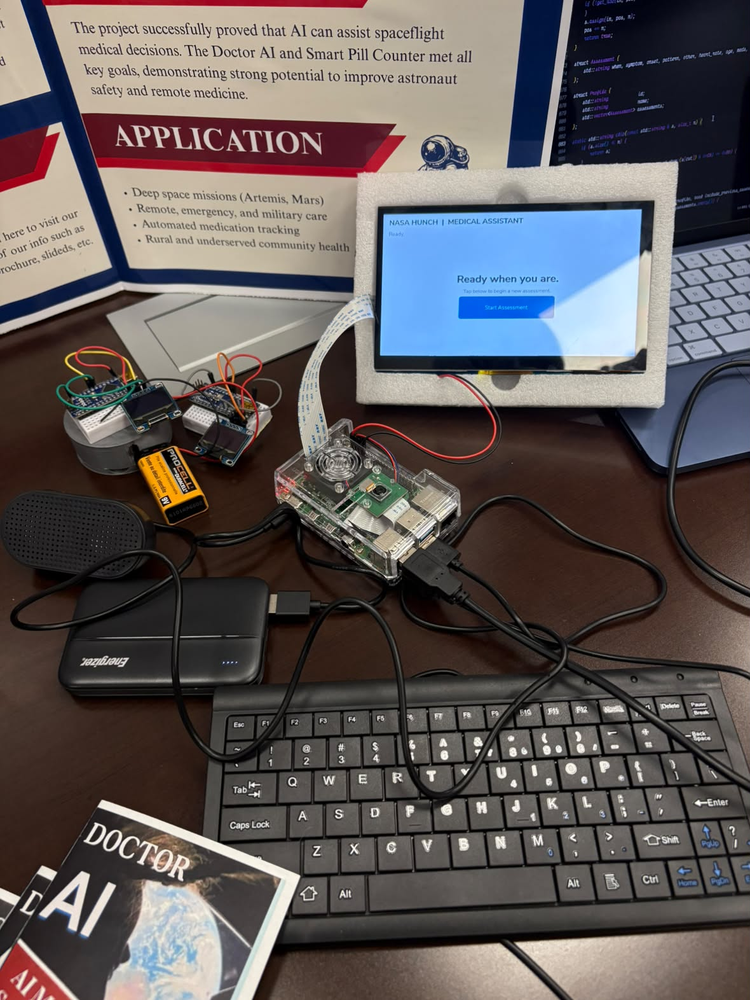

04 OUR NASA HUNCH PROJECT
Student ideas,
built together.
Doctor AI is a student engineering project from Gladys Porter Early College High School. We are learning through research, building, and testing.
THE PROJECT TEAM
Learning through
making.
A student-built NASA HUNCH project, developed through research and hands-on testing.
PROJECTNASA HUNCH · Doctor AI
TEAMKrystal Olivarez
Kimora Lee
Ramon Torres
Kimora Lee
Ramon Torres
SCHOOLGladys Porter Early College High School
PROJECT YEAR2026–2027
PRELIMINARY DESIGN REVIEW
A working prototype
and a sharper question.
At PDR, judges encouraged us to focus on one body system and make the check-in more adaptive.
